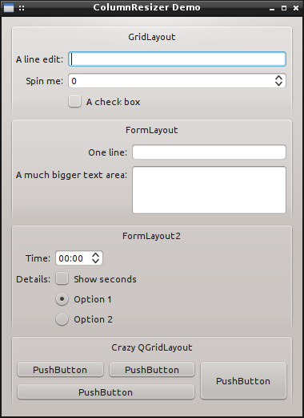
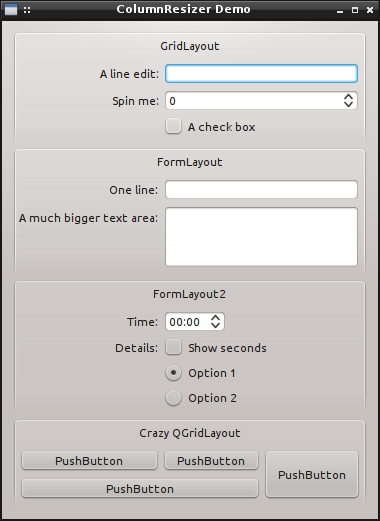
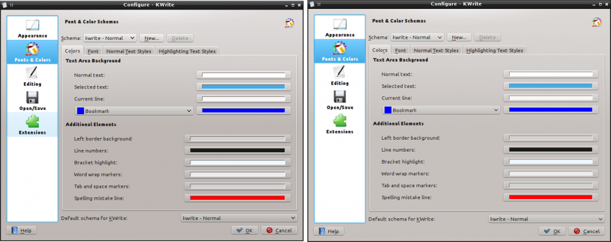
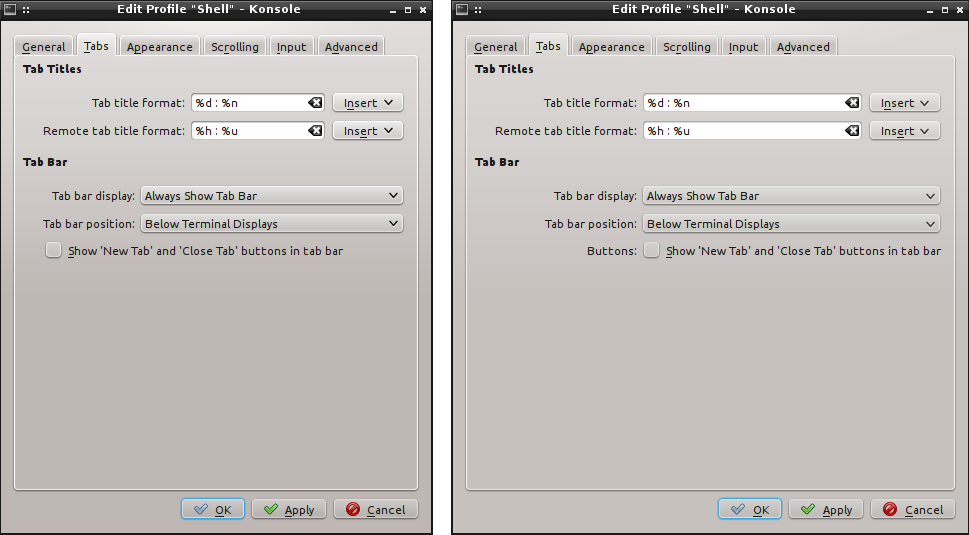

Have you ever encountered a dialog like that?
And wished you could make it look like this instead?
This is not really easy to do with Qt because when you have two QGroupBoxes the layouts inside each QGroupBox do not know each other. GTK+ has a nice class named GtkSizeGroup to help with this, but Qt has no equivalent.
I decided to investigate whether it was possible to implement a Qt equivalent of GtkSizeGroup. ColumnResizer, my implementation, is not as powerful as the original but it can synchronize column widths from multiple layouts. In fact, the above screenshots come from ColumnResizer demo application.
I tried to design the API so that it is easy to integrate with existing code. Basically, using ColumnResizer looks like this:
MyDialog::MyDialog(QWidget* parent)
m_ui(new Ui_MyDialog)
{
m_ui->setupUi(this);
ColumnResizer* resizer = new ColumnResizer(this);
resizer->addWidgetsFromLayout(m_ui->someGroupBox->layout(), 0);
resizer->addWidgetsFromLayout(m_ui->anotherGroupBox->layout(), 0);
}
It boils down to instantiating a ColumnResizer, then calling addWidgetsFromLayout() on all layouts whose column you wish to synchronize. This method accepts two arguments: a layout and a column number. ColumnResizer will then iterate through all widgets of the column in the layout and compute the column minimum width. Later it will ensure all columns of all layouts it handles are at least as wide as this minimum width.
Note that it works with QGridLayout and QFormLayout. In the case of QFormLayout, the column parameter must be either 0 (labels) or 1 (fields). ColumnResizer will complain if you pass anything else.
Also note that ColumnResizer takes care of checking the kind of layout you pass to it, so you don't have to include definitions for the different layouts or change the code if you decide to change from a QGridLayout to a QFormLayout for example.
Here are two before/after examples from KWrite and Konsole configuration dialogs:
KWrite  Konsole I had to rework the checkbox a bit due to a current limitation of ColumnResizer, see below
You can find the code on github: https://github.com/agateau/columnresizer.
It already works reasonably well but has a few limitations. Tor example it does not correctly handle widgets which spawn multiple columns. It is self-contained: simply copy columnresizer.h and columnresizer.cpp in your project, add columnresizer.cpp to the list of files to build and you should be good to go. Note that it does not depend on kdelibs: making it possible to use it in Qt applications as well.
I am not sure about the future of this class yet. While I could ask for it to go in kdelibs, but I would like it to be available for Qt-only applications as well. Ideally it should go into Qt itself, or even better Qt should get the ability to synchronize column widths of multiple layouts.
{kind=link}
{kind=link}
{kind=link}
{kind=link}